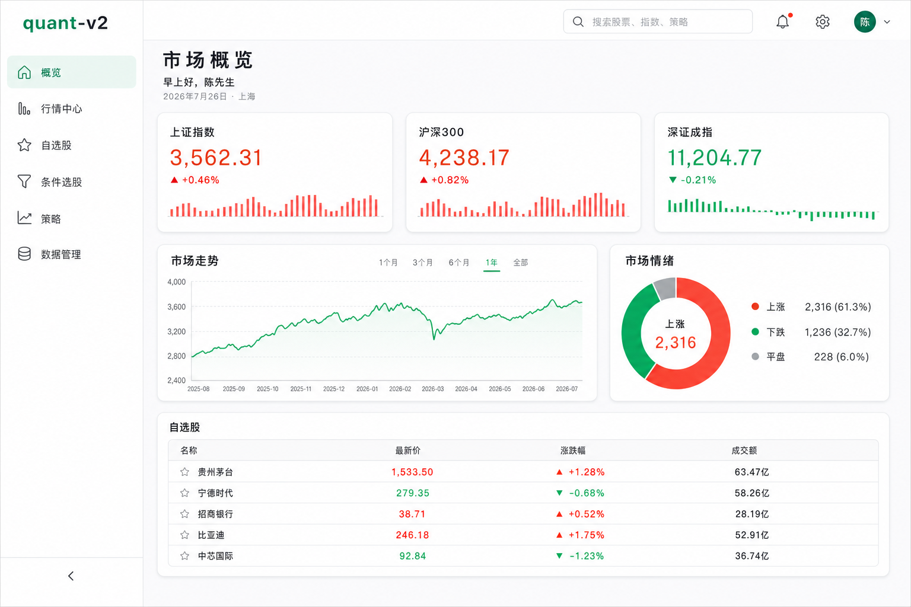
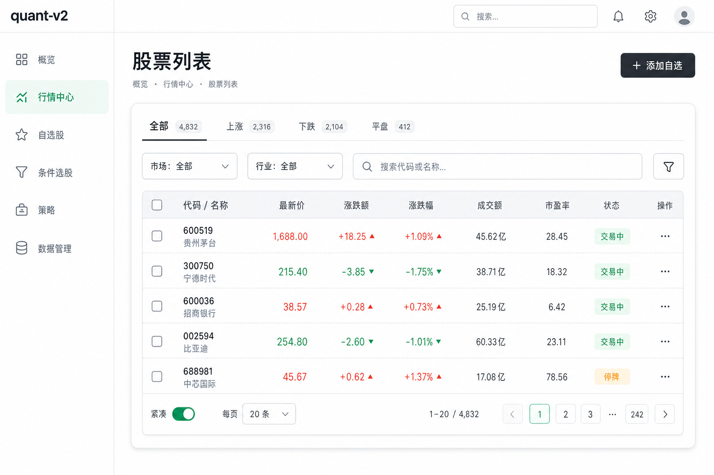
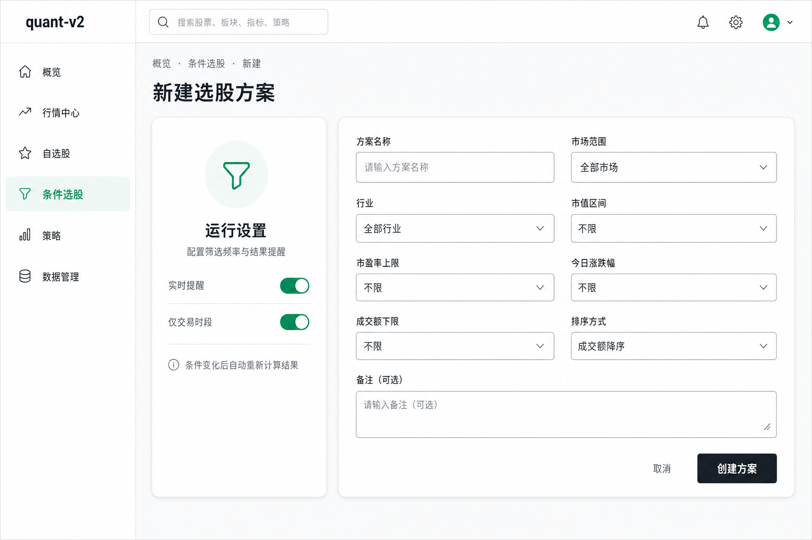
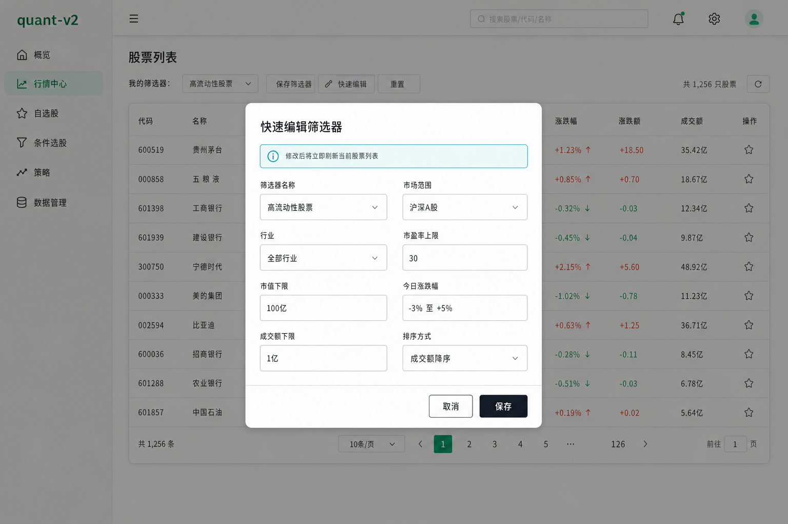

现有 MUI theme 只有基础颜色、12px 圆角和两项组件覆盖，页面密度与组件状态尚无统一合同。
研究范围与证据强度
达到模式饱和后提前结束，共检查 3 个页面，未触及 10 页上限。 数值来自 2560×1156 Chrome 视口下的可见界面与 computed styles； 移动端在 390×844 视口复核。2026-07-26 的站点版本可能后续变化。
| 样本 | 覆盖能力 | 提取重点 | 结论 |
|---|---|---|---|
/dashboard |
仪表盘、数据卡、图表卡、简表、导航 | 页面骨架、卡片、层级、图表配色、阴影 | 实测 建立基础语言 |
/dashboard/user/list |
Tab、筛选、搜索、复杂表格、分页、状态 | 表头/行高、密度、筛选区、表格卡组合 | 实测 建立数据工作台模式 |
/dashboard/user/new |
上传、开关、两列表单、主操作 | 字段高度、表单栅格、卡片宽度、移动折叠 | 实测 建立编辑模式 |
| Quick update 弹窗 | 中型 Dialog、Alert、密集表单、Actions | 720px 宽、24px 内距、16px 圆角、动作顺序 | 实测 覆盖弹窗 |
| Settings 抽屉 | 右侧 Drawer、滚动容器、设置卡 | 360px 宽、68px Header、半透明 Paper、阴影 | 实测 覆盖抽屉 |
| 深色 + 390px 移动端 | 主题语义、导航收缩、卡片堆叠 | 深色 surface、16px 页边距、64px AppBar | 实测 覆盖响应式 |
设计语言
中性色承担结构
大面积纯白或深灰，边界用低透明度灰；Minimal 主绿只出现在主要动作、选中、焦点和关键序列。 不用彩色卡片堆叠制造层级。
圆角与轻阴影分层
控件 8px、卡片与 Dialog 16px。卡片通常无实线边框，使用两段灰色阴影； 表格、输入和分隔线才使用细边界。
数字优先，说明退后
主指标 32/48、标题 14/22、补充信息 12–14px。数字启用 tabular-nums； 涨跌同时显示符号、文字与颜色。
规则密度，不随机留白
以 8px 为主网格，4px 只用于图标微调或紧凑关系；常用间隔 8、12、16、24、32、40、64px。
一个任务，一个容器
Tab、筛选、表格、分页组合在同一 Card；Dialog 由 Title、Content、Actions 组成； 避免每个小区块都套 Paper。
桌面高效，移动可触
桌面允许 36px 操作按钮和 76px 信息行；移动端主要动作至少 44px， 多列表单和卡片栅格单列化，表格横向滚动或切换列表视图。
基础令牌
颜色：完整采用 Minimal 色板
完整采用 Minimal 色板：主色 #00A76F、辅助色 #8E33FF，
中性色从 #FCFDFD 到 #141A21，信息/成功/警告/错误分别为
#00B8D9、#22C55E、#FFAB00、#FF5630。
中国市场上涨复用错误红、下跌复用成功绿，但必须用正负号、箭头或文字消除语义歧义。
白色画布，浅灰结构
- Canvas / Paper：
#FFFFFF - Neutral surface：
#F4F6F8 - Primary text：
#1C252E - Secondary text：
#637381 - Divider：
rgb(145 158 171 / 20%) - Hover / Selected：灰色 8% / 16%
深灰画布，Paper 提亮一级
- Canvas：
#141A21 - Paper：
#1C252E - Neutral surface：
#28323D - Primary text：
#FFFFFF - Secondary text：
#919EAB - Divider 仍为灰色 20%；阴影改用黑色透明层
字体
| 层级 | Minimal 实测 | quant-v2 规范 | 使用场景 |
|---|---|---|---|
| H1 | Barlow 800 · 40/50 | Barlow 800 · 40/50；中文回退 Public Sans/系统字体 | 极少使用的一级产品标题 |
| H2 | Barlow 800 · 32/42.7 | Barlow 800 · 32/43；中文回退 Public Sans/系统字体 | 关键数据或大区块标题 |
| H3 | Barlow 700 · 24/36 | Barlow 700 · 24/36；中文回退 Public Sans/系统字体 | 页面标题 |
| H4 / H5 / H6 | 20/30 · 18/27 · 17/28 | 同尺寸，700 / 700 / 600 | 卡片标题、Dialog 标题、工具区 |
| Body 1 / 2 | 16/24 · 14/22 | 同尺寸，400 | 正文 / 表格、说明与控件 |
| Button | 14/24 · 700 | 同尺寸；禁止全大写 | 所有操作按钮 |
| Caption / Overline | 12/18 · 400 / 700 | 同尺寸 | 时间、单位、组标签 |
| 金融数字 | 指标值 32/48 · 700 | 32/48 · 700，tabular-nums |
价格、收益、规模、变化率 |
可直接使用的文件
间距、圆角、边界与布局
8px 主网格，4px 半步
0 / 4 / 8 / 12 / 16 / 20 / 24 / 32 / 40 / 48 / 64
- 图标与文字：8px
- 紧密字段/标签：12px
- 移动页边距：16px
- 卡片与 Dialog 内容：24px
- 卡片栅格：24px
- 页面底部：64px
8px 控件，16px 容器
- XS 4px：微型状态、内嵌图形
- SM 8px：Button、Input、Nav item、Alert
- MD 12px：局部媒体、嵌套面板
- LG 16px：Card、Dialog、设置 Tile
- Pill：Avatar、Badge、圆形 IconButton
边界少，阴影轻
- Card：双段灰色阴影，无 elevation 编号依赖
- Drawer：向内容侧投射 -40px 影
- Dialog：黑色 24% 大范围阴影
- 输入/表格：1px divider，不加阴影
- 嵌套 Card 默认只用边框，不叠两层阴影
布局尺寸
| 区域 | 实测值 | quant-v2 规范 | 说明 |
|---|---|---|---|
| 桌面侧栏 | 300px | 300px；页面少于 5 个一级入口时可暂不启用 | 固定导航，不把业务筛选塞入全局侧栏 |
| 桌面 AppBar | 72px | 72px | 透明/模糊背景，工具按钮 36px |
| 移动 AppBar | 64px | 64px | 侧栏变临时 Drawer；保留主任务与账号入口 |
| 内容最大宽度 | 1200px | 1200px | 数据大屏允许显式 full-bleed，默认不可无限拉宽 |
| 桌面内容内距 | 左右 40px，底 64px | ≥1200px 使用 40px；中屏 24px | 页面标题与主卡片共享左边线 |
| 移动内容内距 | 左右 16px，底 64px | 16px | 390px 下卡片实测宽约 343px |
| 栅格间距 | 24px 为主 | 24px；紧凑统计区可 16px | 不要出现 17/22/26px 等孤立值 |
MUI 组件尺寸与模式
| MUI 组件 | 基准尺寸 | 内距 / 圆角 | 使用规则 |
|---|---|---|---|
Button |
small 28 / medium 36 / large 44px | 8px；medium 6×12 | 桌面默认 medium；移动主操作 large；disableElevation |
IconButton |
36×36px | 8px，圆形 hit area | 无文字必须有 aria-label 与 Tooltip；触控外层保证 44px |
OutlinedInput |
56px | 16×14px；8px | 输入 15/24；默认边框灰 20%，focus 2px |
Card |
内容决定 | 24px；16px | 默认无边框、elevation 0、使用 custom card shadow |
Tab |
42px 高 | 9px 垂直；组间 40px | 14/22、600；短下划线表示选中，数量用 Badge |
TableCell |
Head 56px；Row 76px | 16px | 14/22；head 600；dense row 52px |
Chip |
24px 高 | 左右 8px；6px | 状态色使用浅底+深文字；保留文本，不用纯色点 |
Alert |
最小 52px | 6×16px；8px | 浅色背景、16% 边界；不用于普通说明文字 |
Dialog |
medium 720px | Title/Content/Actions 24px；16px | 屏幕边距 16px；Actions 右对齐、间隔 12px |
Drawer |
360px，移动 100vw | Header 68px；内容左右 20px | 右侧详情/设置；内容独立滚动；Header 固定 |
| Vertical nav item | 44px | 4/8/4/12px；8px | 选中使用 Minimal 主绿 8% 背景，不使用实心按钮 |
Card specimen
指标卡
24px 内距、16px 圆角、双段轻阴影。标签 14/22 600； 主值 32/48 700；趋势与周期放同一行。
总资产
¥ 1,286,540.32
▲ +2.6% · 近 7 日
Control specimen
表单控件
56px 字段建立稳定扫描线；36px 桌面按钮保持紧凑。 页面在触控断点下将主要按钮提升到 44px。
证券代码 / 名称
卡片
单一指标
- 默认最小高 154–162px，内距 24px。
- 同组卡片等高，主值必须可比较。
- 迷你图放右侧，不抢标题与数值层级。
- 整卡可点击时提供 hover 和键盘焦点。
标题、工具、画布
- Header 由标题/说明与右侧筛选组成。
- 画布与 Card 共用背景，不再套 Paper。
- 图例靠近图表，颜色来自共享 chart tokens。
- loading/empty/error 保持同一最小高度。
一个工作台容器
- Tab、筛选、表格、分页同一 Card。
- 容器负责 overflow；Table 不自行圆角。
- 底部工具区与分页共享 64px 左右高度。
- 避免 Card 中再放有阴影 Card。
表格
Tab → Filter → Head → Rows → Footer
- Tab 区 42px 高，左右内距 20px。
- 筛选字段 56px，工具区上下 20px、左右 20px。
- 表头 56px，背景 neutral-200，文字 secondary。
- 标准行 76px，可放 Avatar + 两行文本；纯数字表可 56–64px。
- 不使用斑马纹；hover 用灰色 8%。
高信息密度仍可解释
- 数字右对齐并使用 tabular-nums；文本默认左对齐。
- 排序按钮覆盖完整表头，显示方向和无障碍状态。
- 状态 Chip 同时显示文字；涨跌同时显示符号。
- 行操作保持最后一列，默认最多 2 个；更多进入 Menu。
- Dense 是用户偏好，不是所有表格默认。
表单
任务分组，而非字段平铺
- 桌面主表单两列，列间 16px、行间 24px。
- 关联设置可放窄侧卡；移动端全部单列。
- 卡片内距 24px，字段高度 56px。
- 主操作右对齐；多步流程使用稳定底栏。
默认、悬浮、焦点、错误完整
- 默认边界灰 20%，hover 灰 32%。
- focus 2px 品牌边界 + 外部可见焦点环。
- 错误使用红色边界、图标和文本，不只改颜色。
- helper text 12/18；异步校验说明当前状态。
标签描述字段，不把示例当标签
- 所有输入具有持久 label；placeholder 只给格式示例。
- 金额、比例、数量明确单位与精度。
- 危险/不可逆操作与普通保存分离。
- 提交中禁用重复提交，并保持按钮宽度不跳动。
抽屉与弹窗
保留页面上下文的侧任务
- 用于筛选、设置、详情预览、轻量编辑。
- Header 68px，标题 18/28，IconButton 36px。
- Paper 90% 不透明 + 20px blur；内容独立滚动。
- 纯设置可使用 invisible backdrop；会改业务数据的 Drawer 必须显示 backdrop。
- 移动端宽 100vw，并保留关闭按钮与返回手势。
阻断式确认或短任务
- 用于必须先处理的确认、短表单、错误恢复。
- 外边距 16px、圆角 16px、Title/Content/Actions 各 24px。
- 中型表单 720px；普通确认由 quant-v2 收敛到 480px。
- 默认操作顺序：取消 → 主操作；危险动作使用 error 色并重复对象名称。
- 必须 focus trap、Esc 关闭策略、恢复触发点焦点。
视觉验证稿
以下四张 1536×1024 桌面稿用于校验理解，不是逐像素页面实现。 它们共同采用 Minimal 的绿色主色、紫色辅助色、中性灰、16px 卡片圆角、轻阴影、 300px 导航侧栏与紧凑 MUI 控件；行情语义统一为中国市场习惯的红涨绿跌。




响应式、交互与无障碍
| 断点 | 页面骨架 | 卡片与表单 | 表格与操作 |
|---|---|---|---|
| xs · 0–599 | 64px AppBar；16px 页边距；无常驻侧栏 | 单列、全宽；主要按钮 44px | 横滚或卡片列表；冻结第一关键列需专项验证 |
| sm · 600–899 | 24px 页边距；临时侧栏 | 统计卡可两列；表单视字段长度决定 1–2 列 | 隐藏次要列，保留行 Menu |
| md · 900–1199 | 可启用紧凑侧栏；内容 24px | 表单两列；图表主次布局 | 标准表格；筛选可换行 |
| lg · 1200–1535 | 300px 侧栏；内容最大 1200px | 完整栅格，24px gap | 标准密度，完整列 |
| xl · ≥1536 | 内容仍限制 1200px，分析大屏可显式扩展 | 不因屏幕宽而无限增加列数 | 优先提高图表宽度，不拉长文本行 |
所有操作可达
- 焦点环 3px，不能被 Card overflow 截断。
- Menu、Dialog、Drawer 有正确焦点进入与返回。
- 表头排序、Tab、分页与图表工具支持键盘。
目标 WCAG 2.2 AA
- 正文 ≥4.5:1；大字和图形 ≥3:1。
- secondary/disabled 只用于相应层级，不承载关键结果。
- 状态使用图标、正负号或文字作为第二编码。
反馈清晰，不装饰
- hover/focus 120ms，Drawer/Dialog 200ms 为实现默认值。
- 遵从 reduced-motion；图表不使用无意义循环动画。
- 加载骨架匹配最终几何，避免布局跳动。
实施边界与迁移顺序
本方案先提供设计合同与可复制示例，不直接修改当前应用主题。 落地时以 MUI theme 为组件唯一入口，CSS variables 服务于全局 CSS、图表容器和非 MUI 元素； 禁止页面继续新增散落颜色、圆角和阴影。
-
阶段 1｜令牌与主题：
将 design-tokens.css 迁入
service-web/src/styles/，用 mui-theme.ts 合并现有src/app/theme.tsx；保留现有颜色模式存储行为，并由ColorModeProvider同步document.documentElement.dataset.colorScheme = mode， 使非 MUI 元素与 CSS variables 同步切换。自托管 Public Sans Variable 与 Barlow， 不从远程 CDN 加载字体。 - 阶段 2｜基础组件： 固化 AppShell、PageHeader、SurfaceCard、MetricCard、StatusChip、DataTableToolbar、 EmptyState、ConfirmDialog 与 DetailDrawer；只封装重复语义，不做万能组件。
- 阶段 3｜代表页面： 先迁移市场概览、标的分析两条现有路由；统一卡片、图表 Header、状态和响应式， 同步更新 KLineChart/ECharts 的共享视觉令牌。
- 阶段 4｜数据工作台： 首个真实列表按本方案组合 Tab、Filter、Table、Pagination；在真实数据量出现前不引入 MUI X。
- 阶段 5｜视觉回归： 固定 light/dark × 390/768/1200/1440 四组视口，覆盖默认、loading、empty、error、 Drawer、Dialog 和键盘焦点。
跨产品视觉合同
- palette、typography、spacing、shape、elevation
- Button/Input/Card/Table/Dialog/Drawer 默认覆盖
- focus、disabled、hover、selected 状态
- 深浅主题与 chart visual tokens
业务语义与组合
- 页面信息架构与字段顺序
- 指标、状态、错误与权限文案
- 表格列、筛选、分页和空态
- 图表数据、单位、涨跌和交互
避免重新碎片化
- 页面硬编码 hex、随机 padding/radius/shadow
- Card 内反复嵌套有阴影 Paper
- 使用颜色作为唯一业务状态
- 复制 Minimal 品牌、插图、图标或页面源码
验收标准与待决问题
无散落视觉常量
- 颜色、间距、圆角、阴影都来自 theme/token。
- light/dark 语义一致，图表与 MUI 共用颜色源。
- 金融涨跌同时有符号/文字，不只依赖红绿。
尺寸与状态一致
- Card 16/24，Input 56/8，桌面 Button 36/8。
- Table head 56、row 76/dense 52。
- Drawer 360，Dialog 720/480，两者焦点管理通过。
四类视口可用
- 390–1440px 无页面级横向溢出。
- 键盘可完成导航、筛选、弹窗和抽屉任务。
- light/dark、reduced motion、200% zoom 可读。
验证命令与检查
vp check：格式化、lint、TypeScript。vp test：theme mapper、状态颜色、组件默认值。vp build：生产构建与无意外字体/资产依赖。vp run e2e：主题、响应式、Dialog/Drawer、键盘焦点。- 人工检查：中文/数字基线、图表 tooltip、表格密度、200% zoom、打印/导出视图。
| 待决问题 | 推荐默认 | 决定时点 |
|---|---|---|
| Public Sans / Barlow 如何分发？ | 应用内自托管；禁止远程字体 CDN | 设计系统首次实现时 |
| 一级导航何时改为 300px 侧栏？ | 一级入口达到 5 个或层级达到 2 级时 | 信息架构冻结时 |
| 列表移动端用横滚还是卡片？ | 行情矩阵横滚；管理列表卡片化 | 首个真实列表字段与主任务确定时 |
| 是否采购或直接使用 Minimal 资产？ | 否；复现视觉与交互规范，不使用模板代码或资产 | 若未来需要模板代码，先完成许可评估 |